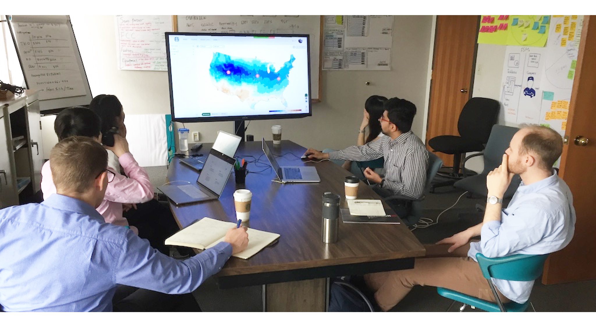

Enabling Effective Preventive Maintenance through IoT
User-Centered Design Process · User Research · Proof of Concept
My Role
Product Design Co-op
Cross-functional Team
Starbucks Corporate Facilities, R&D, Tryer Center Innovation Lab, with support from design co-op team
Overview
Starbucks is shifting into a predictive maintenance approach with an interconnected water filtration system. Data aggregated from the IoT sensors sheds light on equipment status, potential failures, and "fix-before-failure" opportunities to optimize system's uptime and reduce cost of reactive maintenance.

Store Partner Interview & Journey Map
To pinpoint the cause of high mindshare, I interviewed 4 store managers and mapped out store partners' experience journey during a reactive maintenance procedure.
I learned there's an unwritten rule that store partners on the shift are expected to capture and report water filtration failures for timely instructions and maintenance. In reality, the bar has been quite high.
Unlock IoT Potential in Preventive Maintenance
Identifying a Feasible Scope
Starbucks was in an early stage of integrating IoT data to gain insights in enabling preventive maintenance. Worked closely with R&D engineers and subject-matter experts from water filtration supplier, we deep dived into data profile streamed from an array of flow, pressure, and conductivity sensors, and formed a better understanding of the technical feasibility upfront.

A Sneak Peeking into Our Warroom
Solution & Impact

Unfortunately, due to NDA I can’t share specific details about the solution I proposed to effectively engage store partners in preventive maintenance powered by IoT intelligence. Please feel free to contact me if you are interested in learning more. I am more than happy to walk you through my process and key decisions to get buy-in from our stakeholders!